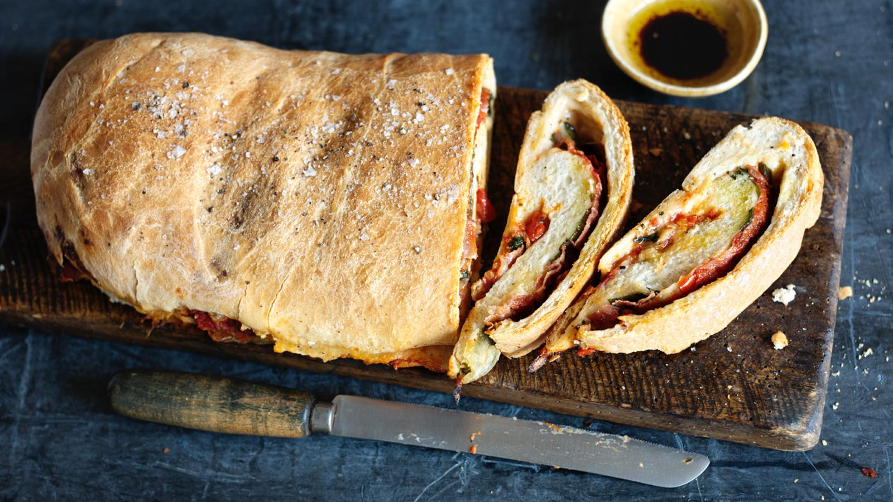

Stromboli

Ingredients
- 450g/1lb strong white flour, plus extra for dusting
- 50g/1oz semolina
- 1 x 7g/¾oz sachet of fast-action dried yeast
- 2 tsp flaked sea salt
- 2 tbsp olive oil, plus extra for greasing
- 325ml/11fl oz warm water
Method
- To make the dough, sift the flour into a large bowl and stir in the semolina and yeast. Mix the sea salt and olive oil with the water and stir into the flour. Mix with a large wooden spoon until the dough comes together and forms a soft, spongy ball.
- Transfer the dough to a lightly floured surface and knead it for five minutes until smooth. Place the dough into a bowl, cover with lightly oiled cling film and leave it for about an hour in a warm place or until it has doubled in size.
- While the dough is rising, make the tomato sauce. Heat one tablespoon of the olive oil in a nonstick frying pan and fry the onion over a low heat for five minutes until softened and lightly browned. Stir regularly and add the garlic for the last minute of the cooking time. Tip the tomatoes into the pan and add the oregano and caster sugar. Season with salt and pepper. Place over a fairly high heat and cook the sauce for 5–8 minutes until very thick, stirring constantly. Remove the pan from the heat and leave the sauce to cool.
- Roll out the dough on a lightly floured surface into a rectangle measuring about 44cm x 32cm/17in x 13in.
- Spread the tomato mixture over the dough, leaving a 2cm border around the edge. Lay the prosciutto in a single layer over the sauce. Tear the mozzarella into small pieces and dot over the prosciutto, then scatter the basil leaves on top.
- Tuck in the two short ends and roll the stromboli up firmly to enclose the filling. Place it, seal-side down, on a large baking sheet lined with baking parchment and leave to rise for 30 minutes.
- Preheat the oven to 200C/400F/Gas 6.
- Brush the remaining oil over the dough, season with a little more salt and pepper and bake the stromboli for 25–30 minutes until well risen and golden brown.
- Slice thickly and serve with some good olive oil and balsamic vinegar for dipping, and a fresh green salad.